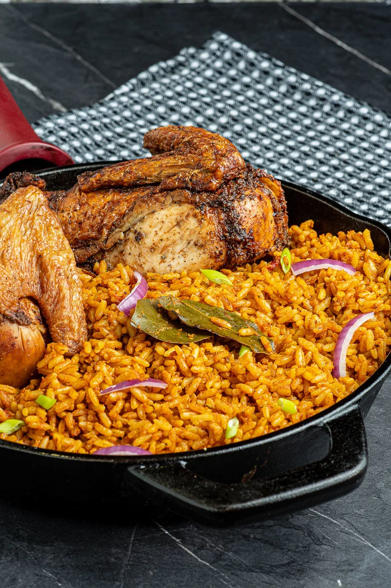

Jollof Rice

Description
Jollof Rice:Jollof rice is a staple in West African cuisine. It’s made from rice, tomatoes, onions, peppers, and other seasonings. The dish is cooked in one pot. It’s simple and easy to make at home—and the end result is absolutely delicious!
Ingredients
- The main ingredient in jollof rice is, of course, rice. I used long-grain parboiled rice for this recipe, but you can also use
- canned tomato, fresh tomatoes, bell peppers, scotch bonnet, onions, garlic, and ginger
- oil for frying your sauce—any kind of vegetable oil will do.
- Stock—Chicken, beef, or vegetable stock are great choices here for adding depth of flavor.
- And lastly, there’s the seasoning and herbs—curry powder, salt, black/white pepper, bouillon powder, thyme, and bay leaves.
Steps
- The inevitable foundation for building up the flavor in this meal is to start by sauteeing the Onions. This should take about 3 to 5 minutes. The next thing is to stir in the tomato paste. This adds a deep and rich tomato flavor; I simply fry this for another 5 minutes or thereabout.
- Add the ginger and garlic and cook along with the tomato paste for another two minutes; Actually, by the time this is ready, you will notice it in the smell. If you keep it cooking any longer, you might risk burning them.
- Add the blended peppers. Usually, there is no particular time frame for frying this pepper. I often stop when the sauce becomes really thick, and the oil literally floats on top of the sauce. At this point, most of the water is gone, and the sauce no longer smells raw. Trust me, you will know, but just in case you are still in doubt, I would say maybe 15 to 20 minutes depending on the quantity of water in your blended pepper.
- Finally, in building my flavor, I add the thyme, curry powder, salt, white pepper (good but optional), and seasoning cubes. Adjust the seasoning at this point if there is a need to.
- Once the flavor is on point, then, I stir in the Rice. Make sure you stir the rice properly until you cover each grain of rice with the sauce.
- Now add the chicken stock. Give it a brief stir and cover it up with a tight-fitting lid. If your lid is not fitting enough, simply cover the rice with foil paper before covering it with the lid. This is because Jollof needs a lot of steam in order to turn out well.
- Once the rice comes to a boil, reduce the heat to medium-low immediately and continue to cook until the rice is done, about 20 to 30 minutes.
- Serve with Fried Chicken, Spicy Grilled Chicken, Grilled Tilapia Fish, or Gizzards and plantains.